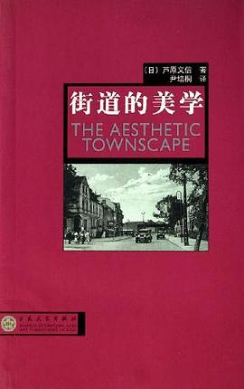

《街道的美学》

总体观点
日本建筑学会前会长芦原义信先生关于城市公共空间与人性化街区美学的经典名作。全书分上下两篇（《街道的美学》与《续街道的美学》），以细腻深邃的东方文人视角，对二战后被汽车霸权与钢铁水泥割裂的现代城市进行了深刻的人文审视。
核心论点：街道不仅是汽车通行的交通走廊，更是城市最核心的公共起居室和文化容器。好的街道美学必须建立在宜人的空间领域界定、丰富的立面轮廓层次与充满烟火气的‘中间领域（灰空间）’之上。
作者对比了欧洲砖石‘墙文化’与日本木构‘柱文化’的空间哲学差异，提出了第一轮廓线与第二轮廓线理论，极力呼吁现代城市规划从冷酷的高速公路乌托邦，全面回归以步行者为尺度、充满生活温情的街道景观。
核心观点
-
1. 街道是城市的起居室，绝不能沦为纯粹的汽车通行管道
现代城市规划最大的悲剧就是将街道降格为机动车的高速走廊；真正的城市活力来自街道两侧步行的市民、驻足交谈的邻里与路边露天咖啡座。
例 ·二战后美国许多城市大建无红绿灯的城市快速路，导致沿线传统街铺全部倒闭，街道沦为荒无人烟、犯罪高发的冷漠柏油地狱。 -
2. 东西方空间文化的根本分野：墙的文化 vs 柱的文化
西方中世纪城市由城墙与闭锁石墙构成，街景由连续严密的硬质界面界定；日本东方传统则由木柱与出檐支撑，室内外通过推拉门自由渗透流转。
例 ·巴黎街道两侧建筑全由石砌承重外墙紧密相连形成整齐峡谷；而东京传统街道两旁町屋则通过挑檐、木格栅与门帘向街道半透明开放。 -
3. 第一轮廓线与第二轮廓线：城市景观生动丰富度的终极源泉
第一轮廓线是建筑主体屋顶与天空交界的天际线（宏观骨架）；第二轮廓线则是一楼临街的招牌、雨棚、绿植与遮阳帘（微观近景），正是第二轮廓线赋予城市无穷生命力。
例 ·哪怕临街高楼是一排死板的方块水泥盒子（第一轮廓线平庸），只要底商允许商户布置个性花盆、暖色雨棚与漂亮招牌（第二轮廓线丰富），整条街道依然生机盎然。 -
4. 阴角空间集聚效应：墙角的安全感是户外活动的磁铁
在开放的室外广场上，人们本能地排斥站在无依无靠的广场正中央；两面墙相交形成的‘阴角空间’在心理上极具庇护感，是人群自发停留驻足的首选。
例 ·广场上的长椅如果孤零零放在中央草坪很少有人坐，但如果贴着喷泉池壁或建筑凹角摆放，立刻座无虚席。 -
5. 中间领域（灰空间）是促进社区邻里交往的缓冲安全岛
在高度私密的私人住宅与高度开放的公共街道之间，必须设立阳台、骑楼柱廊、挑檐与台阶等半私密半公共的灰空间，让市民无压力地产生接触。
例 ·广州骑楼与意大利博洛尼亚拱廊，市民在廊下躲雨买报喝茶，既身在公共街道中，又享有如在屋檐下的安全舒适。 -
6. 步行者天国：收复被汽车掠夺的街道，重塑人性化城市灵魂
针对小汽车对城市空间的粗暴蚕食，城市中心区必须设立周末限时禁行车、全权归还行人的‘步行者天国’，唤醒人们散步、游憩与偶遇的本真快乐。
例 ·东京银座和巴黎香榭丽舍大街实行限时周末步行化，成千上万市民推着婴儿车悠闲漫步在宽阔马路中央，商圈营业额反而爆发式增长。
全书结构
-
一 建筑的空间领域
解构建筑内外空间的心理边界，对比西方以厚重石墙防御外部的‘城郭文化’与日本以轻质纸窗向自然敞开的‘柱文化’。
例 ·欧洲中世纪城市由城墙与闭锁石墙构成，街景由墙面连续界定；日本传统町屋则以可拆卸木格栅向街道半开放渗透。 -
二 街道的构成
提出街道宽高比D/H法则、阴角空间集聚效应、下沉式庭园以及街道横截面空间的视觉美学法则。
例 ·街道两旁建筑墙角形成的‘阴角空间’在心理上极具安全感，常成为露天咖啡座、小摊贩与行人停留聚集的最佳热点。 -
三 关于空间的几项考察
考察街道宽深比、立面连续性、色彩与质感，论证行人在街道漫步时视觉感受的节奏感与尺度适宜性。
例 ·当街道立面开窗尺度适中、一楼底商频繁更换门面招牌时，行人在步行过程中视线不断获得新鲜刺激，不易感到单调疲劳。 -
四 世界街道的分析
对比意大利佛罗伦萨、威尼斯水巷、巴黎林荫大道与日本传统街道，分析不同地理文化对街道性格的塑造。
例 ·威尼斯因水网纵横完全排除机动车干扰，纯粹的步行街桥系统创造了全世界尺度最亲切宜人、最具安全感的街道空间。 -
五 结束语
上篇总结：呼吁打破室内设计与室外景观的绝对界限，将城市街道视作全体市民共同的起居室来精心雕琢。
例 ·优质城市不应将街道沦为纯粹机动车通行的柏油通道，而应通过座椅、绿植与铺装营造如室内客厅般舒适的公共空间。 -
六 关于空间领域的考察
深入探讨模糊中间领域（灰空间）在现代城市中的复活，阳台、深挑檐与拱廊如何促进邻里互动交往。
例 ·意大利博洛尼亚全城长达数十公里的骑楼柱廊，既为市民遮风挡雨，又构成了私密住宅与公共街道之间绝佳的过渡缓冲区。 -
七 景观的构成
提出第一轮廓线（建筑天际线）与第二轮廓线（招牌、雨棚、绿植近景）的理论，解析城市立面丰富度的层次源泉。
例 ·哪怕城市建筑主体是一座死板的方形水泥楼（第一轮廓线），一楼丰富生动的招牌、花盆与遮阳篷（第二轮廓线）也能救活街景。 -
八 对住宅和城市环境的建议与探索
针对二战后高密度城市蔓延与汽车霸权，提出‘步行者天国’、人车分流与严格控制建筑高度的宜居探索。
例 ·日本东京银座周末实行限时封闭机动车通行的‘步行者天国’，街道瞬间回归市民散步、驻足、交谈与消费的人性本真。 -
九 世界景观的分析
深入实地剖析巴黎香榭丽舍大街、伦敦摄政街、京都花见小路等经典案例的视线走廊与立面高度控制原则。
例 ·巴黎严格规定沿街建筑檐口高度不得超过街道宽度，形成整齐划一的新古典立面，远眺凯旋门享有极致通透的视线走廊。 -
十 结束语——现代建筑展望
下篇终局展望：尖锐批判现代主义建筑技术至上、切断文脉与漠视人性的冰冷弊端，呼吁城市美学向人性尺度全面回归。
例 ·告别勒·柯布西耶光辉城市‘巨型公路+孤立高楼’的无人性空想，回到简·雅各布斯所提倡的充满街角生活烟火气的人性化街道。